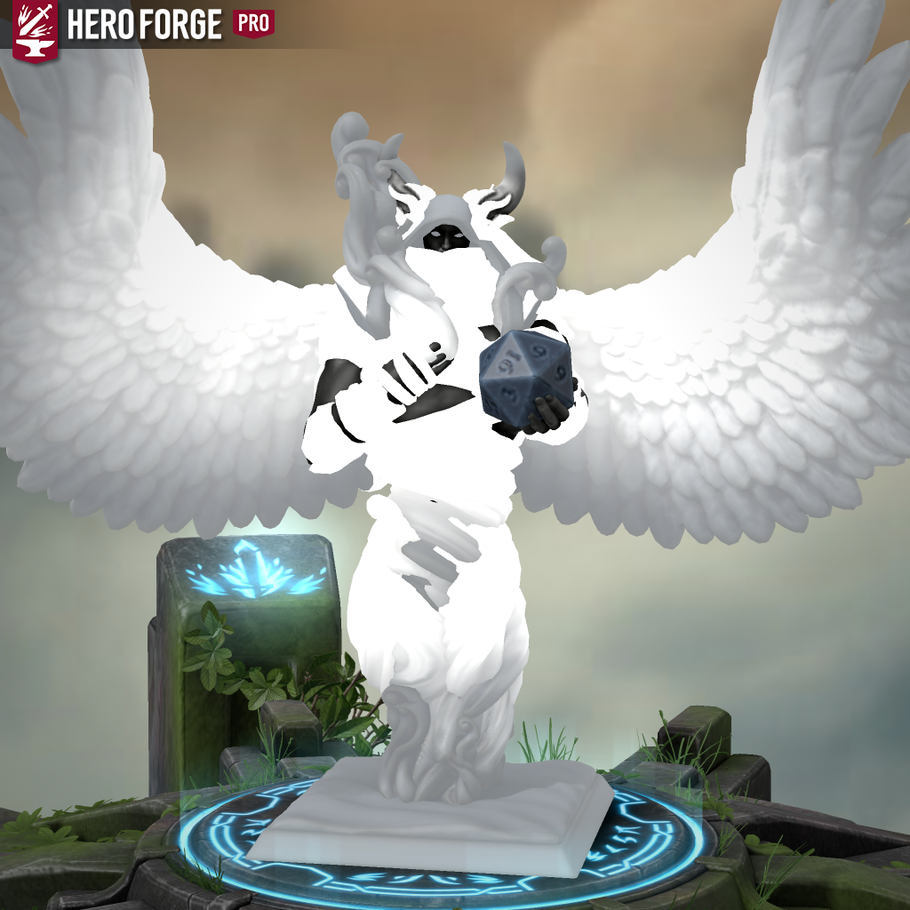
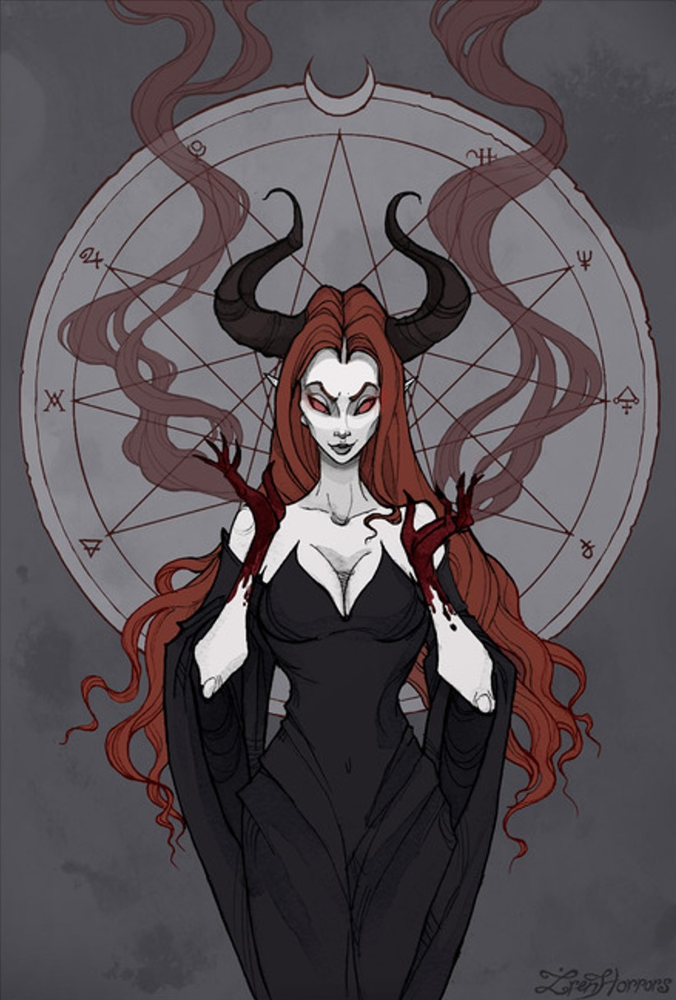

Heaven Pantheon
The Heaven Pantheon represents Neutrality, Balance and the Afterlife. It is led by the God of Knowledge, Time and Fate, Karma.
Warrior Pantheon

The Warrior Pantheon represents all those that walk the path of a warrior. It is led by the God of Primal Power, Ignis.
Magic Pantheon
The Magic Pantheon represents everything that has to do with magic and all those that use it. It is led by the God of Magic, Loafus Cramwell.
Hidden Pantheon
The Hidden Pantheon represents trickery, deception and those that hide in the shadows. It is led by the Goddess of Vampires, Deceit, and Seduction, Lilith.